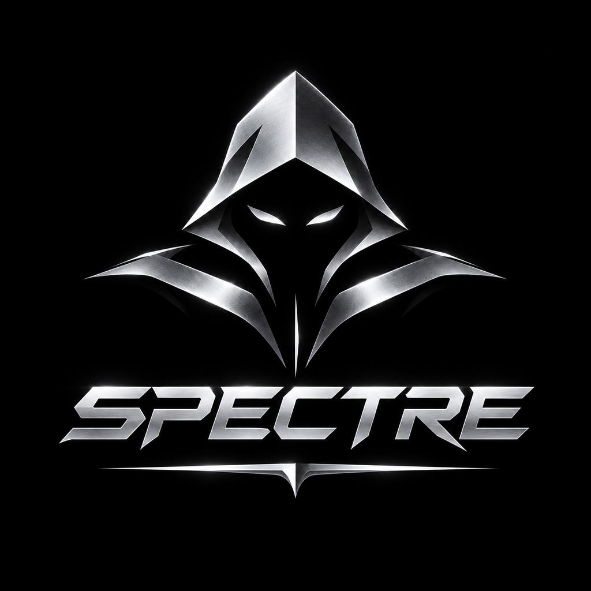

SPECTRETerms of Service
SPECTRE Uploader · Effective 19 November 2026
1. What the app does
SPECTRE Uploader is a desktop tool operated by the SPECTRE team. With the account owner's explicit authorization through TikTok Login Kit, it uploads videos prepared by the team to that owner's TikTok account, using the TikTok Content Posting API. It does not post to any account without that authorization.
2. Who may use it
The app is intended for the SPECTRE team's own TikTok account. Anyone who authorizes it must comply with the TikTok Terms of Service and Community Guidelines.
3. Content responsibility
The authorizing account owner is responsible for the content uploaded through the app, including holding the rights to it. Each video is reviewed by the owner and finished or published in TikTok by the owner.
4. Revoking access
You can revoke the app's access at any time in TikTok: Settings and privacy → Security → Apps and services (or the equivalent menu in your TikTok version).
5. No warranty
The app is provided "as is", without warranties of any kind. SPECTRE is not affiliated with or endorsed by TikTok.
6. Changes
These terms may be updated; the effective date above will change accordingly.
7. Contact
Telegram: @spectrebase